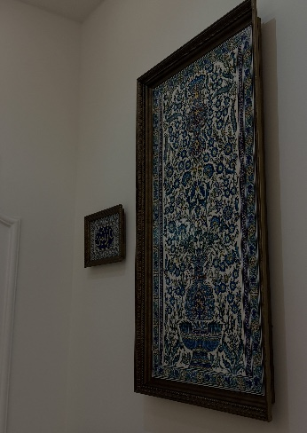
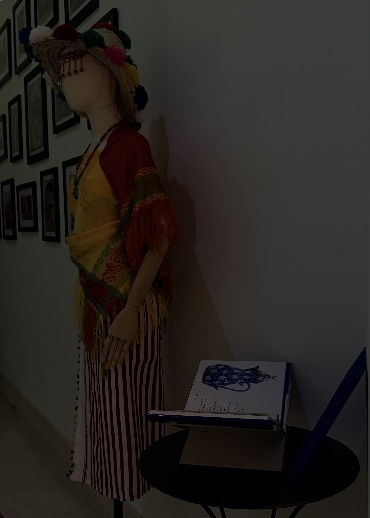
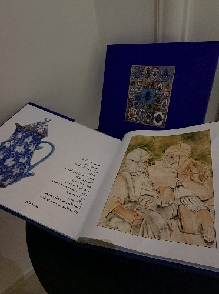
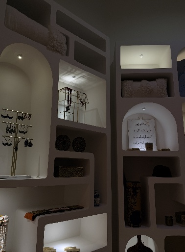
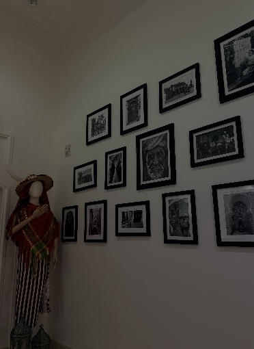
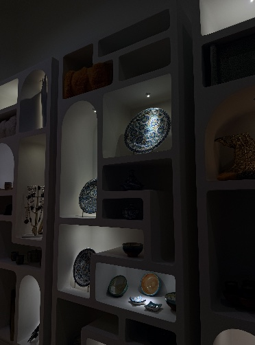
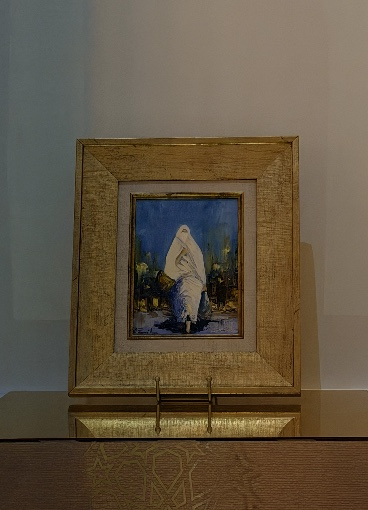
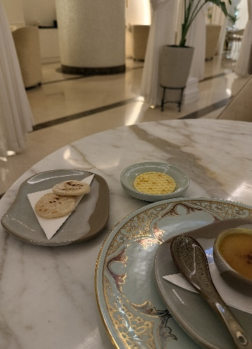
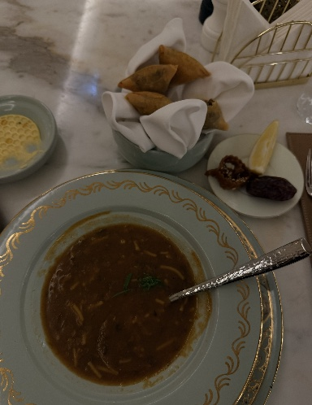
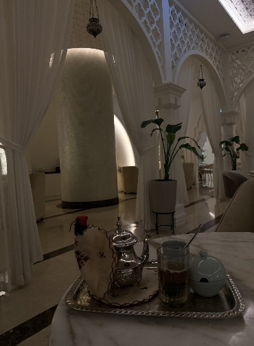

A name. No cuisine, no country.
01
The name, twice. Then on the wall.
دار يماDAR YEMA

NOTE TO SELFDrop in my walk-in clip here, from the sign to the first room. And find a real source for “yema” meaning “mom” in darja, so I'm not just trusting my own ear.
02
Who is reading the name?
Swipe through. Same restaurant, five readers.
“You never left home.”
The text says Maghrebian and lists Algerian boureks.
Family-style home cooking, “rooted in ancestral heritage”.
“The most original Moroccan food I tasted since years.”
Add a card for how Dar Yema writes itself. Copy the exact menu names from my Nov 13 photos, then check their Instagram and website.
03
Many words in, one country out.
Text · O3“North African Maghrebian”
Text · O3A focus on Morocco
Text · O6“Algerian boureks”
Listing category · O3Moroccan
NOTE TO SELFPut the menu photos here. Does the menu itself say Moroccan, or does it name the country each dish comes from? This decides whether the flattening is Michelin's or the restaurant's own.
04
Home, lit to be looked at.






NOTE TO SELFAdd the slow pan along the shelves and the book stand. Check the clip first for staff or diners in frame.
05
Gold-rimmed plates. A tea ritual.



NOTE TO SELFWrite up what I saw at the table. Who gets the tea ritual explained, in which language, and do the families pour for themselves? That tells me if it's a script or a habit.
06
After prayer, the families.
Families
V2 Obs 1, 3 · Friday, right after prayer · no photos
Home may be something people do here, not only something shown.
NOTE TO SELFAdd my table count and who sat where from the Nov 13 map. Note which languages I heard. Then visit one cheaper Maghrebi place to see what home looks like when nobody is staging it.
07
Dar Yema stages home.
The evidence shows
- The name is written differently for each reader (P1, P10, O4)
- The cuisine is filed under one country (O3, O6)
- Heritage objects are lit to be seen (P12, P13, P16)
Not yet
- Who it is staged for
- Whether diners take it up
EVIDENCE LOG AND SOURCES
- V1My first visit: observations Obs 1–12, photos P1–P24.
- V2My second visit, Friday after prayer. Notes only.
- O1, O2Printemps Doha press release
- O3, O6Michelin Guide, English
- O4Michelin Guide, Arabic
- O5Visitor reviews, Wanderlog
- ZukinZukin, S. (2008). Consuming authenticity. Cultural Studies, 22(5), pp. 736, 745. (Note to self: check this against my reading copy.)
- CresswellNote to self: add the full citation.